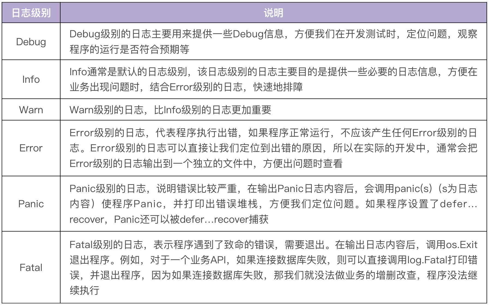
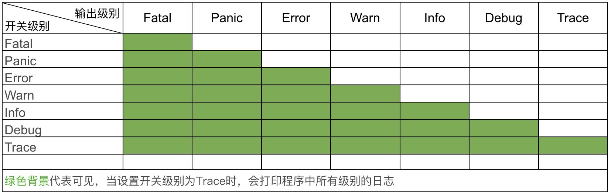
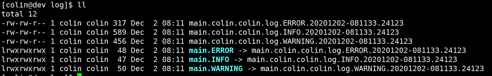
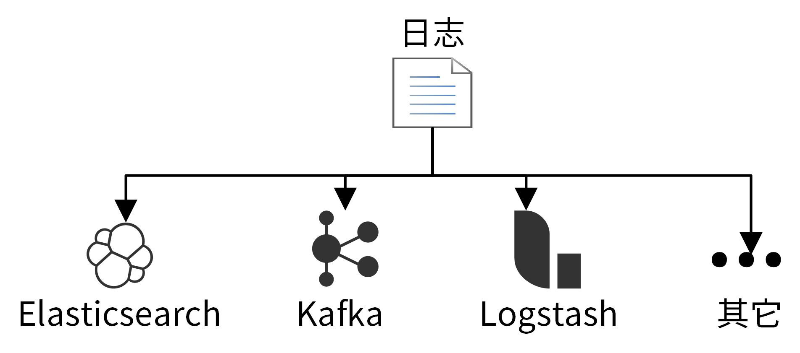
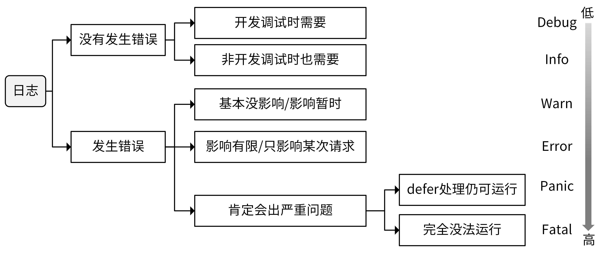
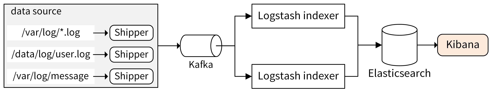

- 00 开篇词 从 0 开始搭建一个企业级 Go 应用.md.html
- 01 IAM系统概述：我们要实现什么样的 Go 项目？.md.html
- 02 环境准备：如何安装和配置一个基本的 Go 开发环境？.md.html
- 03 项目部署：如何快速部署 IAM 系统？.md.html
- 04 规范设计（上）：项目开发杂乱无章，如何规范？.md.html
- 05 规范设计（下）：commit 信息风格迥异、难以阅读，如何规范？.md.html
- 06 目录结构设计：如何组织一个可维护、可扩展的代码目录？.md.html
- 07 工作流设计：如何设计合理的多人开发模式？.md.html
- 08 研发流程设计（上）：如何设计 Go 项目的开发流程？.md.html
- 09 研发流程设计（下）：如何管理应用的生命周期？.md.html
- 10 设计方法：怎么写出优雅的 Go 项目？.md.html
- 11 设计模式：Go常用设计模式概述.md.html
- 12 API 风格（上）：如何设计RESTful API？.md.html
- 13 API 风格（下）：RPC API介绍.md.html
- 14 项目管理：如何编写高质量的Makefile？.md.html
- 15 研发流程实战：IAM项目是如何进行研发流程管理的？.md.html
- 16 代码检查：如何进行静态代码检查？.md.html
- 17 API 文档：如何生成 Swagger API 文档 ？.md.html
- 18 错误处理（上）：如何设计一套科学的错误码？.md.html
- 19 错误处理（下）：如何设计错误包？.md.html
- 20 日志处理（上）：如何设计日志包并记录日志？.md.html
- 21 日志处理（下）：手把手教你从 0 编写一个日志包.md.html
- 22 应用构建三剑客：Pflag、Viper、Cobra 核心功能介绍.md.html
- 23 应用构建实战：如何构建一个优秀的企业应用框架？.md.html
- 24 Web 服务：Web 服务核心功能有哪些，如何实现？.md.html
- 25 认证机制：应用程序如何进行访问认证？.md.html
- 26 IAM项目是如何设计和实现访问认证功能的？.md.html
- 27 权限模型：5大权限模型是如何进行资源授权的？.md.html
- 28 控制流（上）：通过iam-apiserver设计，看Web服务的构建.md.html
- 29 控制流（下）：iam-apiserver服务核心功能实现讲解.md.html
- 30 ORM：CURD 神器 GORM 包介绍及实战.md.html
- 31 数据流：通过iam-authz-server设计，看数据流服务的设计.md.html
- 32 数据处理：如何高效处理应用程序产生的数据？.md.html
- 33 SDK 设计（上）：如何设计出一个优秀的 Go SDK？.md.html
- 34 SDK 设计（下）：IAM项目Go SDK设计和实现.md.html
- 35 效率神器：如何设计和实现一个命令行客户端工具？.md.html
- 36 代码测试（上）：如何编写 Go 语言单元测试和性能测试用例？.md.html
- 37 代码测试（下）：Go 语言其他测试类型及 IAM 测试介绍.md.html
- 38 性能分析（上）：如何分析 Go 语言代码的性能？.md.html
- 39 性能分析（下）：API Server性能测试和调优实战.md.html
- 40 软件部署实战（上）：部署方案及负载均衡、高可用组件介绍.md.html
- 41 软件部署实战（中）：IAM 系统生产环境部署实战.md.html
- 42 软件部署实战（下）：IAM系统安全加固、水平扩缩容实战.md.html
- 43 技术演进（上）：虚拟化技术演进之路.md.html
- 44 技术演进（下）：软件架构和应用生命周期技术演进之路.md.html
- 45 基于Kubernetes的云原生架构设计.md.html
- 46 如何制作Docker镜像？.md.html
- 47 如何编写Kubernetes资源定义文件？.md.html
- 48 IAM 容器化部署实战.md.html
- 49 服务编排（上）：Helm服务编排基础知识.md.html
- 50 服务编排（下）：基于Helm的服务编排部署实战.md.html
- 51 基于 GitHub Actions 的 CI 实战.md.html
- 特别放送 Go Modules依赖包管理全讲.md.html
- 特别放送 Go Modules实战.md.html
- 特别放送 IAM排障指南.md.html
- 特别放送 分布式作业系统设计和实现.md.html
- 特别放送 给你一份Go项目中最常用的Makefile核心语法.md.html
- 特别放送 给你一份清晰、可直接套用的Go编码规范.md.html
- 直播加餐 如何从小白进阶成 Go 语言专家？.md.html
- 结束语 如何让自己的 Go 研发之路走得更远？.md.html
- 捐赠
20 日志处理（上）：如何设计日志包并记录日志？
你好，我是孔令飞，接下来的两讲，我们来聊聊如何设计和开发日志包。
在做Go项目开发时，除了处理错误之外，我们必须要做的另外一件事是记录日志。通过记录日志，可以完成一些基本功能，比如开发、测试期间的Debug，故障排除，数据分析，监控告警，以及记录发生的事件等。
要实现这些功能，首先我们需要一个优秀的日志包。另外，我还发现不少Go项目开发者记录日志很随意，输出的日志并不能有效定位到问题。所以，我们还需要知道怎么更好地记录日志，这就需要一个日志记录规范。
有了优秀的日志包和日志记录规范，我们就能很快地定位到问题，获取足够的信息，并完成后期的数据分析和监控告警，也可以很方便地进行调试了。这一讲，我就来详细介绍下，如何设计日志包和日志记录规范。
首先，我们来看下如何设计日志包。
如何设计日志包
目前，虽然有很多优秀的开源日志包可供我们选择，但在一个大型系统中，这些开源日志包很可能无法满足我们定制化的需求，这时候我们就需要自己开发日志包。
这些日志包可能是基于某个，或某几个开源的日志包改造而来，也可能是全新开发的日志包。那么在开发日志包时，我们需要实现哪些功能，又如何实现呢？接下来，我们就来详细聊聊。
先来看下日志包需要具备哪些功能。根据功能的重要性，我将日志包需要实现的功能分为基础功能、高级功能和可选功能。基础功能是一个日志包必须要具备的功能；高级功能、可选功能都是在特定场景下可增加的功能。我们先来说基础功能。
基础功能
基础功能，是优秀日志包必备的功能，能够满足绝大部分的使用场景，适合一些中小型的项目。一个日志包应该具备以下4个基础功能。
- 支持基本的日志信息
日志包需要支持基本的日志信息，包括时间戳、文件名、行号、日志级别和日志信息。
时间戳可以记录日志发生的时间。在定位问题时，我们往往需要根据时间戳，来复原请求过程，核对相同时间戳下的上下文，从而定位出问题。
文件名和行号，可以使我们更快速定位到打印日志的位置，找到问题代码。一个日志库如果不支持文件名和行号，排查故障就会变得非常困难，基本只能靠grep和记忆来定位代码。对于企业级的服务，需要保证服务在故障后能够快速恢复，恢复的时间越久，造成的损失就越大，影响就越大。这就要求研发人员能够快速定位并解决问题。通过文件名和行号，我们可以精准定位到问题代码，尽快地修复问题并恢复服务。
通过日志级别，可以知道日志的错误类型，最通常的用法是：直接过滤出 Error 级别的日志，这样就可以直接定位出问题出错点，然后再结合其他日志定位出出错的原因。如果不支持日志级别，在定位问题时，可能要查看一大堆无用的日志。在大型系统中，一次请求的日志量很多，这会大大延长我们定位问题的时间。
而通过日志信息，我们可以知道错误发生的具体原因。
- 支持不同的日志级别
不同的日志级别代表不同的日志类型，例如：Error级别的日志，说明日志是错误类型，在排障时，会首先查看错误级别的日志。Warn级别日志说明出现异常，但还不至于影响程序运行，如果程序执行的结果不符合预期，则可以参考Warn级别的日志，定位出异常所在。Info级别的日志，可以协助我们Debug，并记录一些有用的信息，供后期进行分析。
通常一个日志包至少要实现6个级别，我给你提供了一张表格，按优先级从低到高排列如下：

有些日志包，例如logrus，还支持Trace日志级别。Trace级别比Debug级别还低，能够打印更细粒度的日志信息。在我看来，Trace级别不是必须的，你可以根据需要自行选择。
打印日志时，一个日志调用其实具有两个属性：
- 输出级别：打印日志时，我们期望日志的输出级别。例如，我们调用
glog.Info("This is info message")打印一条日志，则输出日志级别为Info。 - 开关级别：启动应用程序时，期望哪些输出级别的日志被打印。例如，使用glog时
-v=4，说明了只有日志级别高于4的日志才会被打印。
如果开关级别设置为 L ，只有输出级别 >=L 时，日志才会被打印。例如，开关级别为Warn，则只会记录Warn、Error 、Panic 和Fatal级别的日志。具体的输出关系如下图所示：

- 支持自定义配置
不同的运行环境，需要不同的日志输出配置，例如：开发测试环境为了能够方便地Debug，需要设置日志级别为Debug级别；现网环境为了提高应用程序的性能，则需要设置日志级别为Info级别。又比如，现网环境为了方便日志采集，通常会输出JSON格式的日志；开发测试环境为了方便查看日志，会输出TEXT格式的日志。
所以，我们的日志包需要能够被配置，还要不同环境采用不同的配置。通过配置，可以在不重新编译代码的情况下，改变记录日志的行为。
- 支持输出到标准输出和文件
日志总是要被读的，要么输出到标准输出，供开发者实时读取，要么保存到文件，供开发者日后查看。输出到标准输出和保存到文件是一个日志包最基本的功能。
高级功能
除了上面提到的这些基本功能外，在一些大型系统中，通常还会要求日志包具备一些高级功能。这些高级功能可以帮我们更好地记录日志，并实现更丰富的功能，例如日志告警。那么一个日志包可以具备哪些高级功能呢？
- 支持多种日志格式
日志格式也是我们要考虑的一个点，一个好的日志格式，不仅方便查看日志，还能方便一些日志采集组件采集日志，并对接类似Elasticsearch这样的日志搜索引擎。
一个日志包至少需要提供以下两种格式：
- TEXT格式：TEXT格式的日志具有良好的可读性，可以方便我们在开发联调阶段查看日志，例如：
2020-12-02T01:16:18+08:00 INFO example.go:11 std log
2020-12-02T01:16:18+08:00 DEBUG example.go:13 change std log to debug level
- JSON格式：JSON格式的日志可以记录更详细的信息，日志中包含一些通用的或自定义的字段，可供日后的查询、分析使用，而且可以很方便地供filebeat、logstash这类日志采集工具采集并上报。下面是JSON格式的日志：
{"level":"DEBUG","time":"2020-12-02T01:16:18+08:00","file":"example.go:15","func":"main.main","message":"log in json format"}
{"level":"INFO","time":"2020-12-02T01:16:18+08:00","file":"example.go:16","func":"main.main","message":"another log in json format"}
我建议在开发联调阶段使用TEXT格式的日志，在现网环境使用JSON格式的日志。一个优秀的日志库，例如logrus，除了提供基本的输出格式外，还应该允许开发者自定义日志输出格式。
- 能够按级别分类输出
为了能够快速定位到需要的日志，一个比较好的做法是将日志按级别分类输出，至少错误级别的日志可以输出到独立的文件中。这样，出现问题时，可以直接查找错误文件定位问题。例如，glog就支持分类输出，如下图所示：

- 支持结构化日志
结构化日志（Structured Logging），就是使用JSON或者其他编码方式使日志结构化，这样可以方便后续使用Filebeat、Logstash Shipper等各种工具，对日志进行采集、过滤、分析和查找。就像下面这个案例，使用zap进行日志打印：
package main
import (
"time"
"go.uber.org/zap"
)
func main() {
logger, _ := zap.NewProduction()
defer logger.Sync() // flushes buffer, if any
url := "http://marmotedu.com"
// 结构化日志打印
logger.Sugar().Infow("failed to fetch URL", "url", url, "attempt", 3, "backoff", time.Second)
// 非结构化日志打印
logger.Sugar().Infof("failed to fetch URL: %s", url)
}
上述代码输出为：
{"level":"info","ts":1607303966.9903321,"caller":"zap/structured_log.go:14","msg":"failed to fetch URL","url":"http://marmotedu.com","attempt":3,"backoff":1}
{"level":"info","ts":1607303966.9904354,"caller":"zap/structured_log.go:17","msg":"failed to fetch URL: http://marmotedu.com"}
- 支持日志轮转
在一个大型项目中，一天可能会产生几十个G的日志。为了防止日志把磁盘空间占满，导致服务器或者程序异常，就需要确保日志大小达到一定量级时，对日志进行切割、压缩，并转存。
如何切割呢？你可以按照日志大小进行切割，也可以按日期切割。日志的切割、压缩和转存功能可以基于GitHub上一些优秀的开源包来封装，例如：lumberjack可以支持按大小和日期归档日志，file-rotatelogs支持按小时数进行日志切割。
对于日志轮转功能，其实我不建议在日志包中添加，因为这会增加日志包的复杂度，我更建议的做法是借助其他的工具来实现日志轮转。例如，在Linux系统中可以使用Logrotate来轮转日志。Logrotate功能强大，是一个专业的日志轮转工具。
- 具备Hook能力
Hook能力可以使我们对日志内容进行自定义处理。例如，当某个级别的日志产生时，发送邮件或者调用告警接口进行告警。很多优秀的开源日志包提供了Hook能力，例如logrus和zap。
在一个大型系统中，日志告警是非常重要的功能，但更好的实现方式是将告警能力做成旁路功能。通过旁路功能，可以保证日志包功能聚焦、简洁。例如：可以将日志收集到Elasticsearch，并通过ElastAlert进行日志告警。
可选功能
除了基础功能和高级功能外，还有一些功能。这些功能不会影响到日志包的核心功能，但是如果具有这些功能，会使日志包更加易用。比如下面的这三个功能。
- 支持颜色输出
在开发、测试时开启颜色输出，不同级别的日志会被不同颜色标识，这样我们可以很轻松地发现一些Error、Warn级别的日志，方便开发调试。发布到生产环境时，可以关闭颜色输出，以提高性能。
- 兼容标准库log包
一些早期的Go项目大量使用了标准库log包，如果我们的日志库能够兼容标准库log包，我们就可以很容易地替换掉标准库log包。例如，logrus就兼容标准库log包。这里，我们来看一个使用了标准库log包的代码：
package main
import (
"log"
)
func main() {
log.Print("call Print: line1")
log.Println("call Println: line2")
}
只需要使用log "github.com/sirupsen/logrus"替换"log"就可以完成标准库log包的切换：
package main
import (
log "github.com/sirupsen/logrus"
)
func main() {
log.Print("call Print: line1")
log.Println("call Println: line2")
}
- 支持输出到不同的位置
在分布式系统中，一个服务会被部署在多台机器上，这时候如果我们要查看日志，就需要分别登录不同的机器查看，非常麻烦。我们更希望将日志统一投递到Elasticsearch上，在Elasticsearch上查看日志。
我们还可能需要从日志中分析某个接口的调用次数、某个用户的请求次数等信息，这就需要我们能够对日志进行处理。一般的做法是将日志投递到Kafka，数据处理服务消费Kafka中保存的日志，从而分析出调用次数等信息。
以上两种场景，分别需要把日志投递到Elasticsearch、Kafka等组件，如果我们的日志包支持将日志投递到不同的目的端，那会是一项非常让人期待的功能：

如果日志不支持投递到不同的下游组件，例如Elasticsearch、Kafka、Fluentd、Logstash等位置，也可以通过Filebeat采集磁盘上的日志文件，进而投递到下游组件。
设计日志包时需要关注的点
上面，我们介绍了日志包具备的功能，这些功能可以指导我们完成日志包设计。这里，我们再来看下设计日志包时，我们还需要关注的几个层面：
- 高性能：因为我们要在代码中频繁调用日志包，记录日志，所以日志包的性能是首先要考虑的点，一个性能很差的日志包必然会导致整个应用性能很差。
- 并发安全：Go应用程序会大量使用Go语言的并发特性，也就意味着需要并发地记录日志，这就需要日志包是并发安全的。
- 插件化能力：日志包应该能提供一些插件化的能力，比如允许开发者自定义输出格式，自定义存储位置，自定义错误发生时的行为（例如 告警、发邮件等）。插件化的能力不是必需的，因为日志自身的特性就能满足绝大部分的使用需求，例如：输出格式支持JSON和TEXT，存储位置支持标准输出和文件，日志监控可以通过一些旁路系统来实现。
- 日志参数控制：日志包应该能够灵活地进行配置，初始化时配置或者程序运行时配置。例如：初始化配置可以通过
Init函数完成，运行时配置可以通过SetOptions/SetLevel等函数来完成。
如何记录日志？
前面我们介绍了在设计日志包时，要包含的一些功能、实现方法和注意事项。但在这个过程中，还有一项重要工作需要注意，那就是日志记录问题。
日志并不是越多越好，在实际开发中，经常会遇到一大堆无用的日志，却没有我们需要的日志；或者有效的日志被大量无用的日志淹没，查找起来非常困难。
一个优秀的日志包可以协助我们更好地记录、查看和分析日志，但是如何记录日志决定了我们能否获取到有用的信息。日志包是工具，日志记录才是灵魂。这里，我就来详细讲讲如何记录日志。
想要更好地记录日志，我们需要解决以下几个问题：
- 在何处打印日志？
- 在哪个日志级别打印日志？
- 如何记录日志内容？
在何处打印日志？
日志主要是用来定位问题的，所以整体来说，我们要在有需要的地方打印日志。那么具体是哪些地方呢？我给你几个建议。
- 在分支语句处打印日志。在分支语句处打印日志，可以判断出代码走了哪个分支，有助于判断请求的下一跳，继而继续排查问题。
- 写操作必须打印日志。写操作最可能会引起比较严重的业务故障，写操作打印日志，可以在出问题时找到关键信息。
- 在循环中打印日志要慎重。如果循环次数过多，会导致打印大量的日志，严重拖累代码的性能，建议的办法是在循环中记录要点，在循环外面总结打印出来。
- 在错误产生的最原始位置打印日志。对于嵌套的Error，可在Error产生的最初位置打印Error日志，上层如果不需要添加必要的信息，可以直接返回下层的Error。我给你举个例子：
package main
import (
"flag"
"fmt"
"github.com/golang/glog"
)
func main() {
flag.Parse()
defer glog.Flush()
if err := loadConfig(); err != nil {
glog.Error(err)
}
}
func loadConfig() error {
return decodeConfig() // 直接返回
}
func decodeConfig() error {
if err := readConfig(); err != nil {
return fmt.Errorf("could not decode configuration data for user %s: %v", "colin", err) // 添加必要的信息，用户名称
}
return nil
}
func readConfig() error {
glog.Errorf("read: end of input.")
return fmt.Errorf("read: end of input")
}
通过在最初产生错误的位置打印日志，我们可以很方便地追踪到日志的根源，进而在上层追加一些必要的信息。这可以让我们了解到该错误产生的影响，有助于排障。另外，直接返回下层日志，还可以减少重复的日志打印。
当代码调用第三方包的函数，且第三方包函数出错时，会打印错误信息。比如：
if err := os.Chdir("/root"); err != nil {
log.Errorf("change dir failed: %v", err)
}
在哪个日志级别打印日志？
不同级别的日志，具有不同的意义，能实现不同的功能，在开发中，我们应该根据目的，在合适的级别记录日志，这里我同样给你一些建议。
- Debug级别
为了获取足够的信息进行Debug，通常会在Debug级别打印很多日志。例如，可以打印整个HTTP请求的请求Body或者响应Body。
Debug级别需要打印大量的日志，这会严重拖累程序的性能。并且，Debug级别的日志，主要是为了能在开发测试阶段更好地Debug，多是一些不影响现网业务的日志信息。所以，对于Debug级别的日志，在服务上线时我们一定要禁止掉。否则，就可能会因为大量的日志导致硬盘空间快速用完，从而造成服务宕机，也可能会影响服务的性能和产品体验。
Debug这个级别的日志可以随意输出，任何你觉得有助于开发、测试阶段调试的日志，都可以在这个级别打印。
- Info级别
Info级别的日志可以记录一些有用的信息，供以后的运营分析，所以Info级别的日志不是越多越好，也不是越少越好，应以满足需求为主要目标。一些关键日志，可以在Info级别记录，但如果日志量大、输出频度过高，则要考虑在Debug级别记录。
现网的日志级别一般是Info级别，为了不使日志文件占满整个磁盘空间，在记录日志时，要注意避免产生过多的Info级别的日志。例如，在for循环中，就要慎用Info级别的日志。
- Warn级别
一些警告类的日志可以记录在Warn级别，Warn级别的日志往往说明程序运行异常，不符合预期，但又不影响程序的继续运行，或者是暂时影响，但后续会恢复。像这些日志，就需要你关注起来。Warn更多的是业务级别的警告日志。
- Error级别
Error级别的日志告诉我们程序执行出错，这些错误肯定会影响到程序的执行结果，例如请求失败、创建资源失败等。要记录每一个发生错误的日志，避免日后排障过程中这些错误被忽略掉。大部分的错误可以归在Error级别。
- Panic级别
Panic级别的日志在实际开发中很少用，通常只在需要错误堆栈，或者不想因为发生严重错误导致程序退出，而采用defer处理错误时使用。
- Fatal级别
Fatal是最高级别的日志，这个级别的日志说明问题已经相当严重，严重到程序无法继续运行，通常是系统级的错误。在开发中也很少使用，除非我们觉得某个错误发生时，整个程序无法继续运行。
这里用一张图来总结下，如何选择Debug、Info、Warn、Error、Panic、Fatal这几种日志级别。

如何记录日志内容？
关于如何记录日志内容，我有几条建议：
- 在记录日志时，不要输出一些敏感信息，例如密码、密钥等。
- 为了方便调试，通常会在Debug级别记录一些临时日志，这些日志内容可以用一些特殊的字符开头，例如
log.Debugf("XXXXXXXXXXXX-1:Input key was: %s", setKeyName)。这样，在完成调试后，可以通过查找XXXXXXXXXXXX字符串，找到这些临时日志，在commit前删除。 - 日志内容应该小写字母开头，以英文点号
.结尾，例如log.Info("update user function called.")。 - 为了提高性能，尽可能使用明确的类型，例如使用
log.Warnf("init datastore: %s", err.Error())而非log.Warnf("init datastore: %v", err)。 - 根据需要，日志最好包含两个信息。一个是请求ID（RequestID），是每次请求的唯一ID，便于从海量日志中过滤出某次请求的日志，可以将请求ID放在请求的通用日志字段中。另一个是用户和行为，用于标识谁做了什么。
- 不要将日志记录在错误的日志级别上。例如，我在项目开发中，经常会发现有同事将正常的日志信息打印在Error级别，将错误的日志信息打印在Info级别。
记录日志的“最佳”实践总结
关于日志记录问题，我从以上三个层面给你讲解了。综合来说，对于日志记录的最佳实践，你在平时都可以注意或进行尝试，我把这些重点放在这里，方便你后续查阅。
- 开发调试、现网故障排障时，不要遗忘一件事情：根据排障的过程优化日志打印。好的日志，可能不是一次就可以写好的，可以在实际开发测试，还有现网定位问题时，不断优化。但这需要你重视日志，而不是把日志仅仅当成记录信息的一种方式，甚至不知道为什么打印一条Info日志。
- 打印日志要“不多不少”，避免打印没有作用的日志，也不要遗漏关键的日志信息。最好的信息是，仅凭借这些关键的日志就能定位到问题。
- 支持动态日志输出，方便线上问题定位。
- 总是将日志记录在本地文件：通过将日志记录在本地文件，可以和日志中心化平台进行解耦，这样当网络不可用，或者日志中心化平台故障时，仍然能够正常的记录日志。
- 集中化日志存储处理：因为应用可能包含多个服务，一个服务包含多个实例，为了查看日志方便，最好将这些日志统一存储在同一个日志平台上，例如Elasticsearch，方便集中管理和查看日志。
- 结构化日志记录：添加一些默认通用的字段到每行日志，方便日志查询和分析。
- 支持RequestID：使用RequestID串联一次请求的所有日志，这些日志可能分布在不同的组件，不同的机器上。支持RequestID可以大大提高排障的效率，降低排障难度。在一些大型分布式系统中，没有RequestID排障简直就是灾难。
- 支持动态开关Debug日志：对于定位一些隐藏得比较深的问题，可能需要更多的信息，这时候可能需要打印Debug日志。但现网的日志级别会设置为Info级别，为了获取Debug日志，我们可能会修改日志级别为Debug级别并重启服务，定位完问题后，再修改日志级别为Info级别，然后再重启服务，这种方式不仅麻烦而且还可能会对现网业务造成影响，最好的办法是能够在请求中通过
debug=true这类参数动态控制某次请求是否开启Debug日志。
拓展内容：分布式日志解决方案（EFK/ELK）
前面我们介绍了设计日志包和记录日志的规范，除此之外，还有一个问题你应该了解，那就是：我们记录的日志如何收集、处理和展示。
在实际Go项目开发中，为了实现高可用，同一个服务至少需要部署两个实例，通过轮询的负载均衡策略转发请求。另外，一个应用又可能包含多个服务。假设我们的应用包含两个服务，每个服务部署两个实例，如果应用出故障，我们可能需要登陆4（2 x 2）台服务器查看本地的日志文件，定位问题，非常麻烦，会增加故障恢复时间。所以在真实的企业场景中，我们会将这些日志统一收集并展示。
在业界，日志的收集、处理和展示，早已经有了一套十分流行的日志解决方案：EFK（Elasticsearch + Filebeat + Kibana）或者ELK（Elasticsearch + Logstash + Kibana），EFK可以理解为ELK的演进版，把日志收集组件从Logstash替换成了Filebeat。用Filebeat替换Logstash，主要原因是Filebeat更轻量级，占用的资源更少。关于日志处理架构，你可以参考这张图。

通过log包将日志记录在本地文件中（*.log文件），再通过Shipper收集到Kafka中。Shipper可以根据需要灵活选择，常见的Shipper有Logstash Shipper、Flume、Fluentd、Filebeat。其中Filebeat和Logstash Shipper用得最多。Shipper没有直接将日志投递到Logstash indexer，或者Elasticsearch，是因为Kafka能够支持更大的吞吐量，起到削峰填谷的作用。
Kafka中的日志消息会被Logstash indexer消费，处理后投递到Elasticsearch中存储起来。Elasticsearch是实时全文搜索和分析引擎，提供搜集、分析、存储数据三大功能。Elasticsearch中存储的日志，可以通过Kibana提供的图形界面来展示。Kibana是一个基于Web的图形界面，用于搜索、分析和可视化存储在 Elasticsearch中的日志数据。
Logstash负责采集、转换和过滤日志。它支持几乎任何类型的日志，包括系统日志、错误日志和自定义应用程序日志。Logstash又分为Logstash Shipper和Logstash indexer。其中，Logstash Shipper监控并收集日志，并将日志内容发送到Logstash indexer，然后Logstash indexer过滤日志，并将日志提交给Elasticsearch。
总结
记录日志，是应用程序必备的功能。记录日志最大的作用是排障，如果想更好地排障，我们需要一个优秀的工具，日志包。那么如何设计日志包呢？首先我们需要知道日志包的功能，在我看来日志包需要具备以下功能：
- 基础功能：支持基本的日志信息、支持不同的日志级别、支持自定义配置、支持输出到标准输出和文件。
- 高级功能：支持多种日志格式、能够按级别分类输出、支持结构化日志、支持日志轮转、具备Hook能力。
- 可选功能：支持颜色输出、兼容标准库log包、支持输出到不同的位置。
另外，一个日志包还需要支持不同级别的日志，按日志级别优先级从低到高分别是：Trace < Debug < Info < Warn/Warning < Error < Panic < Fatal。其中Debug、Info、Warn、Error、Fatal是比较基础的级别，建议在开发一个日志包时包含这些级别。Trace、Panic是可选的级别。
在我们掌握了日志包的功能之后，就可以设计、开发日志包了。但我们在开发过程中，还需要确保我们的日志包具有比较高的性能、并发安全、支持插件化的能力，并支持日志参数控制。
有了日志包，我们还需要知道如何更好地使用日志包，也就是如何记录日志。在文中，我给出了一些记录建议，内容比较多，你可以返回文中查看。
最后，我还给出了分布式日志解决方案：EFK/ELK。EFK是ELK的升级版，在实际项目开发中，我们可以直接选择EFK。在EFK方案中，通过Filebeat将日志上传到Kafka，Logstash indexer消费Kafka中的日志，并投递到Elasticsearch中存储起来，最后通过Kibana图形界面来查看日志。
课后练习
思考一下，你的项目中，日志包还需要哪些功能，如何设计？你的日常开发中，如果有比较好的日志记录规范，也欢迎在留言区分享讨论。
期待你的思考和看法，我们下一讲见。
© 2019 - 2023 Liangliang Lee. Powered by gin and hexo-theme-book.